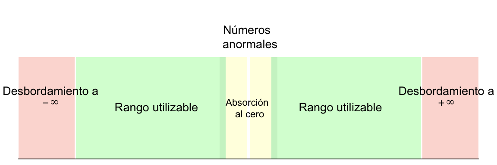

Funciones para crear o verificar vectores de tipo doble
1 Descripción
La función double() creará un vector de tipo doble ("double") que podrá almacenar y representar un subconjunto muy amplio de los números reales con una exactitud máxima de hasta quince dígitos.
La función as.double() intentará convertir en un vector de tipo doble a cualquier tipo de objeto. Por su parte, la función is.double() verificará si un objeto es de tipo doble.
La función single() creará un vector de tipo doble para almacenamiento y representación de números reales, pero añadirá un atributo ("Csingle") que permitirá identificar al vector como uno de tipo simple a nivel interno del código de R. Para más información, puedes ver más adelante la sección Valor devuelto.
La función as.single() intentará coaccionar cualquier objeto hacia un vector de tipo doble y también añadirá un atributo ("Csingle") que permitirá identificar al vector como uno de tipo simple a nivel interno del código de R.
La función numeric() es idéntica a la función double() y la función as.numeric() es idéntica a as.double(). La función is.numeric() comprobará si un vector es de tipo doble ("double") o de tipo entero ("integer"). Estas funciones existen como una denominación más general para identificar a los números reales en R. Para mayor información, puedes consultar más adelante la sección Detalles.
La función c() creará un vector doble si se utiliza para combinar valores reales que estén separados por comas.
2 Forma de uso o sintaxis
double(length = 0)
as.double(x, ...)
is.double(x)
single(length = 0)
as.single(x, ...)
numeric(length = 0)
as.numeric(x, ...)
is.numeric(x)3 Argumentos
| Argumento | Valor esperado | Propósito |
|---|---|---|
longitud |
Un valor entero mayor o igual a cero | Determina la longitud deseada del vector, es decir, el número de elementos que almacenará. El argumento de longitud aceptará números enteros no negativos. Los valores continuos o con decimales (tipo doble) serán convertidos a enteros y la aportación de más de un valor devolverá un mensaje de error. |
x= |
Un objeto | Un objeto para ser coaccionado o verificado como vector de tipo doble. |
... |
Otros argumentos | Otros argumentos que serán pasados desde o hacia otras funciones. |
4 Detalles
4.1 Funciones para crear vectores dobles
Las funciones básicas para crear vectores dobles son double(), as.double(), numeric(), as.numeric() y c(). Éstas son descritas a continuación.
double() creará un vector doble con el número de elementos especificado en el argumento de longitud, length=. Al momento de su creación, cada elemento del vector será igual a cero (0). Enseguida, se podrán asignar valores reales positivos o negativos, así como valores no disponibles (NA o NA_real_), al vector recientemente creado.
La función numeric() es idéntica, en propósito e internamente, a la función double(). Existe como una denominación genérica para referirse a la función de creación de vectores dobles.
as.double() intentará convertir al objeto referido en el argumento x= a un vector de tipo doble y, en caso de tener éxito, devolverá al objeto como un vector de este tipo ("double"). Si la coacción no ha sido exitosa, el resultado será un mensaje de error o un valor no disponible (NA) por cada elemento no coaccionado.
La función as.numeric() es idéntica, en propósito e internamente, a la función as.double(). Existe como una denominación genérica para referirse a la función de conversión de vectores dobles.
c() creará un vector doble si se utiliza para combinar valores reales que estén separados por comas, por ejemplo: c(1.414214, 2.718282, 3.141593). La combinación de elementos con valores reales creará un vector de tipo doble. Para mayor información sobre la combinación de elementos para crear vectores de un determinado tipo puedes ver la página de ayuda de la función c().
En particular, las funciones as.double(), as.numeric() y c() son de tipo primitivo, por lo que su código fuente está implementado de manera interna y no será visible directamente por la usuaria.
La función single() creará un vector de tipo doble para almacenamiento y representación de números reales, con el atributo "Csingle", que permitirá identificar al vector como uno de tipo simple a nivel interno del código de R.
La función as.single() intentará convertir cualquier objeto hacia un vector de tipo doble y añadirá el atributo "Csingle" que permitirá identificar al vector como uno de tipo simple a nivel interno del código de R.
El atributo "Csingle" será utilizado solamente en en la interfaz interna de R con los lenguajes de programación C y Fortran para indicar que los objetos creados deberán ser interpretados como vectores de precisión simple. R no cuenta con el tipo de datos de precisión simple, por lo tanto, todos los números reales serán almacenados con el tipo de precisión doble.
Los vectores dobles podrán almacenar números reales en cada elemento con una precisión de quince cifras significativas exactas en el intervalo aproximado de . Los vectores simples pueden almacenar números reales con una precisión de siete cifras significativas exactas en el intervalo aproximado de . Para más información sobre la utilización de estas funciones, puedes consultar más adelante la sección Valor devuelto.
4.2 Funciones básicas para verificar vectores dobles
Por su parte, la función is.double() se utilizará para verificar si un vector o matriz es de tipo doble ("double"). En particular, is.double() es una función primitiva, por lo que su código fuente está implementado de manera interna y no será visible directamente por la usuaria.
La función is.numeric() comprobará si un vector es de tipo doble ("double") o de tipo entero ("integer"). Por lo tanto, no es exclusiva para los vectores dobles sino para los objetos de modo numérico.
Para más información sobre la utilización de estas funciones, puedes consultar más adelante la sección Valor devuelto.
4.3 Definición de los vectores dobles
Un vector doble es una estructura atómica o fundamental de R destinada al almacenamiento exclusivo de datos de tipo doble en celdas contiguas, así como a la realización de operaciones individuales o en paralelo con los elementos de estas celdas (Becker, Chambers, y Wilks 1998). Los datos de tipo doble consisten en un formato de almacenamiento y representación de números reales basado en la aritmética binaria de punto flotante. Particularmente, los vectores dobles son el único tipo de objeto en R que permite guardar, mostrar y realizar operaciones aritméticas con números reales.
La aritmética binaria de punto flotante es el sistema interno más extendido entre las computadoras actuales para aproximarse a la aritmética decimal de los números reales. Básicamente, es un tipo de almacenamiento numérico, similar a la notación científica, pero con precisión y exactitud limitadas, que posibilita la representación en pantalla de un conjunto de números continuos —los reales— con los elementos de un conjunto de números discretos —los dígitos de la máquina o bits— (Muller et al. 2018, 3). El almacenamiento binario de valores continuos a partir de un número de bits discreto implica, además, que sólo algunos números reales podrán ser representados de forma exacta (Borgwardt 2010).
Así, cuando exista una cifra que el formato no pueda almacenar exactamente será redondeada en pantalla a un número de cifras predeterminado por el argumento digits= de la función options(). Esto conlleva, a su vez, que los números reales representados podrán tener un valor interno marginalmente diferente al que aparece en la pantalla. La diferencia entre el valor almacenado de algunas cantidades y su valor representado es uno de los rasgos característicos de la aritmética de punto flotante (Goldberg 1991).
Específicamente, R define al tipo de datos doble como un formato de almacenamiento que utiliza la aritmética binaria de punto flotante con un tamaño de memoria de ocho bytes para representar, externamente, a un subconjunto amplio de los números reales del sistema de numeración decimal, con signo y punto decimal. Esto equivale a la posibilidad de representar magnitudes reales en el intervalo que va, aproximadamente, de a .
El primer tamaño de memoria estandarizado para guardar números reales en formato de punto flotante fue de bits y se le conoció originalmente como precisión simple en el estándar IEEE-754-1985 del Instituto de Ingenieros Eléctricos y Electrónicos de Estados Unidos (IEEE por sus siglas en inglés). El siguiente rango de almacenamiento para números reales fue definido por el estándar como de 64 bits, por lo que se denominó como precisión doble. En la actualidad, el estándar IEEE-754-2008 utiliza la denominación binaria32 (binary32) para la precisión simple, y binaria64 (binary64) para la precisión doble.
A su vez, la mayoría de las plataformas de sistema en las que se implementa R están basadas en el estándar internacional ISO/IEC-60559-2011 de la Comisión Internacional de Electrotecnia de la Organización Internacional para la Estandarización (ISO, por sus siglas en inglés), equivalente al estándar IEEE-754-2008. De acuerdo con ambos estándares, los valores de precisión doble usarán 64 dígitos binarios para almacenamiento interno y hasta dígitos decimales para la representación externa de los números reales. Además, dicho documento también contempla el almacenamiento y representación de valores especiales para las operaciones matemáticas no definidas (NaN), los valores menos y más infinito (-Inf, +Inf) y los valores menos y más cero (-0, +0). Estos últimos son simplemente equivalentes al cero (0).
En particular, los bits de almacenamiento se distribuyen de la siguiente manera: un bit corresponderá al signo del significante, once bits corresponden al exponente de la base, y los cincuenta y dos bits restantes almacenarán al significante. Para más información sobre estos conceptos, puedes consultar más adelante la sección El almacenamiento de números reales. Por su parte, los dígitos de representación usarán hasta quince dígitos para desplegar en pantalla números reales de manera exacta, y hasta veintidós dígitos para desplegar números reales de manera aproximada. Esto significa que, después del dígito quince, la precisión de una cifra representada aumentará sólo con una reducción o costo en su exactitud. Para más información, puedes consultar más adelante la sección El despliegue en pantalla de valores dobles.
En un sentido práctico, la precisión alude al número de dígitos significativos de una cifra (es decir, sus órdenes de magnitud: centenas, decenas, unidades, así como décimas, centésimas, etc.) que podrán ser desplegados en pantalla, independientemente de su exactitud. Por otra parte, la exactitud se refiere a la equivalencia entre el valor almacenado y el representado en la pantalla. Para una definición más específica, puedes consultar más adelante la sección El almacenamiento de números reales.
En las computadoras modernas, la aritmética de punto flotante está implementada directamente desde la maquinaria del equipo, en el coprocesador matemático o Unidad de Punto Flotante (FPU, por sus siglas en inglés). Por lo tanto, en última instancia, el manejo de los números de precisión doble dependerá de las características del procesador (CPU, por sus siglas en inglés), el coprocesador y el compilador de la computadora donde se instale R. Sin embargo, es muy probable que el equipo siga lo establecido por el estándar ISO/IEC-60559-2011. Para más información sobre los límites del almacenamiento numérico en tu plataforma de sistema puedes ver la página de ayuda sobre las características numéricas del equipo.
4.4 El despliegue en pantalla de los valores dobles
Las cifras en formato doble aparecerán en pantalla en notación fija del sistema de numeración decimal. De manera predeterminada, R desplegará hasta siete dígitos para cualquier valor numérico. Si la cifra incluye fracciones decimales, entonces el punto decimal ocupará uno de estos dígitos. Cuando la usuaria desee desplegar más dígitos en la pantalla, deberá especificarlo con el argumento digits= de la función options(). No obstante, debido a los límites de la precisión doble, el número máximo de dígitos desplegables será de veintidós, de los cuales sólo los primeros quince dígitos podrán representar siempre valores exactos. En consecuencia, a partir del dígito dieciséis algunos valores podrán representarse sólo de forma aproximada.
En América Latina y Estados Unidos el símbolo de separación de enteros y fracciones es el punto decimal ( . ), mientras que en España y algunos países de Europa se utiliza la coma ( , ). Adviértase entonces que R utilizará siempre el punto decimal para desplegar valores reales independientemente de la configuración regional de la plataforma de sistema en la que se encuentre instalado.
Por otra parte, los límites de la representación de los números reales en R ( ) comprenden cifras mucho más precisas que el despliegue de quince cifras significativas exactas y veintidós aproximadas. Por ello, cuando un número tenga más de veintidós dígitos pero se encuentre dentro de los límites numéricos del almacenamiento doble, R desplegará en pantalla una forma abreviada de la notación científica, llamada notación científica E.
La notación científica E es una forma de representar números grandes o pequeños de forma compacta. Los números son mostrados en el formato Me±N, donde M representa un número decimal y la letra e representa al número que se elevará a la potencia N. La notación científica E es útil porque las potencias con superíndices (de la forma ) no se pueden mostrar en la consola de R. Por ejemplo, el número 100000 se puede representar en la consola como 1.0e5, pero no como su equivalente .
Así, la notación científica E es una forma útil de representar números grandes o pequeños de forma compacta que posibilita la representación de números con más de quince cifras significativas de forma exacta siempre que se encuentren dentro de los límites del almacenamiento doble. No obstante, cuando los valores sean demasiado grandes o demasiado pequeños para ser representados adecuadamente, incluso con la notación científica E, los valores se desbordarán a alguno de los infinitos (±Inf) o serán absorbidos al cero (0.0). En el primer caso, los vectores dobles representarán al infinito positivo con los literales +Inf o Inf y al infinito negativo con los caracteres -Inf.
Si deseas trabajar con números con más de quince cifras significativas exactas en notación decimal fija (es decir, sin hacer uso de la notación científica) o, incluso, realizar cálculos con tipos exactos, es recomendable el uso de paquetes más especializados. Por ejemplo, el paquete {Rmpfr} te permite realizar operaciones aritméticas con números de precisión decimal arbitraria y sin error de redondeo. Con todo, pocos campos de la ciencia necesitan precisiones mayores a este umbral, por lo que un gran número de aplicaciones estadísticas podrán realizarse adecuadamente con la precisión doble (Muller et al. 2018, 3).
Para cada tipo de vector atómico, salvo para los vectores crudos ("raw"), existe un tipo propio de valor no disponible, representado en pantalla por los caracteres NA (del inglés Not Available o No Disponible). Así, al tipo doble le corresponderá, a nivel interno, el valor no disponible NA_real_. Si deseas asegurarte de que los vectores dobles reciban solamente valores no disponibles de tipo doble, puedes utilizar directamente el literal NA_real_ (en vez de la forma más simple NA) en las operaciones de asignación de la consola o del código fuente. Para mayor información puedes consultar más adelante la sección Ejemplos, así como la página de ayuda de los valores no disponibles.
Por otro lado, si se realizan operaciones matemáticas no definidas —como la división de cero entre cero o la resta de infinitos— R desplegará un valor no disponible especial representado en pantalla como NaN, cuyos caracteres significan Valor No Numérico (del inglés Not a Number).
4.5 Características de los vectores dobles como objetos
Los vectores dobles ("double"), como todos los vectores atómicos, no podrán contener elementos que no sean del mismo tipo. No obstante, los vectores de tipo doble sí pueden almacenar valores enteros en forma exacta más allá del rango de almacenamiento del tipo entero ("integer"), el cual va, aproximadamente, de .
R cuenta con dos nombres para referirse a los vectores que almacenan números reales: "double" y "numeric", lo que responde a una inercia histórica. En las primeras versiones de R también se usaba el tipo "real" para referirse a estos vectores, pero desapareció a partir de la versión 3.0.0. Para evitar confusiones, es conveniente distinguir entre el tipo y el modo de almacenamiento, así como entre las clases de objetos que existen en R.
El formato de los datos que puede almacenar un vector atómico está definido por el tipo de almacenamiento. Especialmente, R cuenta con tres tipos de almacenamiento numérico: el tipo entero, el tipo doble y el tipo complejo. Mientras que el tipo de almacenamiento es una clasificación excluyente, el modo de almacenamiento es una clasificación genérica. Ello permite agrupar a algunos tipos de almacenamiento con características similares en una sola categoría. Por ejemplo, los vectores dobles y los enteros comparten en común el modo de almacenamiento numérico ("numeric"), de forma que será posible identificarlos como objetos similares para algunas tareas en común.
Además de poseer un tipo y un modo de almacenamiento, los vectores son esencialmente entidades abstractas que poseen atributos, llamados, simplemente, objetos del lenguaje. Uno de los atributos más importantes de cualquier objeto es su clase, la cual determina los métodos y funciones que se le podrán aplicar. En este sentido, todos los tipos numéricos de R poseen una clase propia que define las operaciones matemáticas y estadísticas que les corresponden.
Así, el tipo entero ("integer") pertenece a la clase entero ("integer"), el tipo doble ("double") pertenece a la clase numérico ("numeric"), y el tipo complejo ("complex") pertenece a la clase complejo ("complex"). Los objetos de la clase entero admiten las operaciones aritméticas y estadísticas básicas. Los objetos de la clase numérico admiten todas las operaciones aritméticas y estadísticas aplicables a la clase entero, y, además, permiten todas las operaciones aritméticas y estadísticas para los números reales. Finalmente, los objetos de la la clase complejo admiten las operaciones que se pueden realizar con la clase entero y numérico, pero también las operaciones aritméticas propias de los números complejos.
Si se realiza una operación en común entre objetos numéricos de diferente clase, R coaccionará a los objetos involucrados a la clase que admita más operaciones, y promoverá el tipo de almacenamiento del vector conforme a la clase correspondiente. Es decir, si se realiza una operación matemática entre un vector entero y uno doble, el resultado será un vector de tipo doble. Y si se realiza una operación entre vectores enteros, dobles y complejos, el resultado será un vector de tipo complejo.
5 Valor devuelto
Cualquier número tecleado sin comillas rectas ( "" ) en la consola de R será devuelto como un valor de tipo doble por el lenguaje. Es decir, R podrá identificar literales o constantes numéricas en el código fuente y las devolverá como valores numéricos de tipo doble.
R reconocerá constantes numéricas en el sistema de numeración decimal y hexadecimal. Los valores en base decimal se escribirán tal cual, mientras que los valores en base hexadecimal deberán estar acompañados del prefijo 0x o 0X para indicar que se trata de cifras en este sistema de numeración. Por ejemplo, la cifra 0x10 devolverá el valor doble 16 a partir de la representación hexadecimal ingresada. Por otro lado, la cifra en notación científica E 1e+3 (o también 1e3) devolverá el valor doble 1000 y será equivalente a haber ingresado el literal numérico 1000.
El acceso a los elementos de las celdas de un vector doble se realizará por medio de las operaciones de indización, caracterizadas por la concatenación del nombre del objeto y un par de corchetes ( [ ] ), que contendrán el número o números índice de elementos a extraer, tal como, por ejemplo: un_vector[i]; en donde i será el número índice del elemento que se desee extraer o almacenar. Para almacenar valores dentro del vector deberá usarse la indización en conjunto con el operador de asignación ( <- ). Por ejemplo, la expresión: un_vector[2] <- 3.14159 asignará a la segunda celda del objeto un_vector el valor real .
La función double() creará un vector doble con el número de elementos especificado en el argumento de longitud, length=. Al momento de su creación, cada elemento del vector será igual a cero (0). Luego, se podrán asignar valores reales positivos o negativos, así como valores no disponibles (NA_real_), al vector recientemente creado.
La función as.double() intentará coaccionar los elementos del objeto referido en el argumento x= al tipo doble y, en caso de tener éxito, devolverá al objeto como un vector de este tipo ("double"). Si la coacción no ha sido exitosa, el resultado será un valor no disponible (NA).
Las cadenas de caracteres que contengan representaciones de números del sistema decimal o hexadecimal (las cuales comenzarán con 0x o 0X) entre espacios en blanco se podrán coaccionar a valores dobles. No obstante, cada cadena de caracteres deberá contener una sola representación numérica sin espacios intercalados. De lo contrario, esos elementos serán coaccionados como valores no disponibles (NA).
Además, las cadenas de caracteres que contengan el nombre de valores numéricos especiales de R como, por ejemplo, "NA", "NaN", "Inf" e, incluso, "infinity", serán convertidas a sus respectivos valores matemáticos especiales.
as.double() eliminará los atributos, incluidos los nombres, de los objetos coaccionados, tal como lo hace la función as.vector(). Para asegurarte que después de la coacción un objeto x permanezca con el tipo doble sin perder sus atributos originales, deberás asignar al objeto la etiqueta del tipo doble ("double") con la función storage.mode(). Por ejemplo, como en: storage.mode(x) <- "double". Esta forma de coacción hacia el tipo doble tiene la ventaja de modificar el tipo de almacenamiento sin eliminar los atributos del objeto y es útil cuando se trabaja con matrices.
La función as.double() aplicada a factores devolverá los códigos numéricos detrás de los niveles o etiquetas del factor. Sin embargo, cuando las etiquetas del factor sean ellas mismas valores numéricos y la usuaria desee preservar el valor numérico de las etiquetas al convertir los elementos del factor al tipo doble, se deberá, entonces, extraer primero los valores numéricos de las etiquetas en forma de carácter y, luego, convertirlos al formato doble. Para más información, puedes ver más adelante la sección Ejemplos así como la página de ayuda de la función factor().
Cuando se intente coaccionar un valor al tipo doble, o se ingrese un literal numérico en la consola, y éste sea mayor o menor a los límites del intervalo de almacenamiento, R devolverá el valor infinito positivo (+Inf, Inf) o negativo (-Inf) dependiendo del signo del literal ingresado.
La función c() devolverá un vector doble si se utiliza para combinar valores reales que estén separados por comas, por ejemplo: c(1.414214, 2.718282, 3.141593). El resultado de la combinación de elementos reales creará un vector de tipo doble. Para mayor información sobre la combinación de elementos para crear vectores de un determinado tipo puedes ver la página de ayuda de la función c().
La función is.double() devolverá el valor lógico verdadero (TRUE) o falso (FALSE) dependiendo de si el objeto referido en el argumento x= es de tipo doble, es decir, de si el vector tiene asociada internamente la etiqueta "double". En el caso de los factores, que asocian números enteros a valores categóricos, is.double() devolverá el valor lógico falso (FALSE) al momento de verificar el tipo del objeto.
La función numeric() es idéntica, internamente, a la función double(). Así, numeric() devolverá un vector de precisión doble con el número de elementos especificados en el argumento de longitud, length=. Los elementos del vector creado serán todos iguales a cero (0).
La función as.numeric() intentará coaccionar al objeto referido en el argumento x= para convertir sus elementos al tipo doble y, en caso de tener éxito, devolverá al objeto como un vector de este tipo ("double").
La función is.numeric() devolverá el valor lógico verdadero (TRUE) si el objeto especificado en su argumento x= se trata de un vector entero o de uno doble, pues verificará el modo de almacenamiento genérico del objeto, mientras que as.numeric() transformará, de tener éxito, los valores de un objeto a números reales y asignará el tipo de almacenamiento "double" al objeto coaccionado.
6 El almacenamiento de números reales
El tipo de almacenamiento es una categorización de un conjunto de valores que comparten propiedades similares, y de un conjunto de operaciones definidas para esos valores. Así, un tipo de almacenamiento se caracteriza por un conjunto de objetos con la misma representación. En el caso de los números reales () existen diversos tipos de datos que permiten representarlos, así como realizar operaciones matemáticas con ellos. Algunos nombres de estos tipos de datos son, por ejemplo: single, float o double.
En términos informales, los números reales son aquellos que se pueden representar con la marca de separación de enteros y fracciones, ya sea que la marca utilizada sea el punto ( ) o la coma ( ), y pueden ser números tanto positivos como negativos incluyendo al cero (). En términos matemáticos, los números reales se refieren al conjunto que comprende a los subconjuntos de los números racionales (definidos como la razón de dos enteros donde ) y a los irracionales (no representables por la razón de dos números enteros).
En particular, los números reales poseen al menos dos propiedades muy importantes: 1) su dominio es infinito e incontable (es decir, continuo), por lo que entre un número real y otro número real existe un número indeterminado de ellos; 2) algunos números reales tienen una precisión infinita, por lo que no pueden ser representados exactamente con la marca de separación de enteros y fracciones.
Debido a estas propiedades, y a que las computadoras utilizan un número fijo de bits para almacenar números, las arquitecturas de sistema sólo pueden capturar un número finito de números reales con un nivel de precisión limitada. A la correspondencia entre patrones de bits y algunos números reales se le denomina representación (Geisler y Peguero 2019). Dado el número limitado de bits, una representación realizará un sacrificio entre la cantidad de números representables y el nivel de precisión que estos puedan alcanzar.
Aunque existen diferentes tipos de representaciones para trabajar con números reales —de punto fijo, de punto flotante, posit, logarítmica, etc.— la mayoría de las computadoras modernas utiliza el formato de representación basado en el almacenamiento binario de punto flotante. De este modo, la variación en los nombres de los tipos de datos para números reales proviene, en la mayoría de lenguajes de programación, de variaciones en el grado de precisión de los números de punto flotante.
En esencia, la aritmética binaria de punto o coma flotante () es una representación de la aritmética de los números reales () basada en un formato de almacenamiento interno similar a la notación científica. Dicho formato consiste en la utilización de un número racional con precisión limitada, llamado significante (), multiplicado por una base fija () elevada a un exponente (). En particular, la denominación punto flotante se deriva de dos elementos. Primero, del nombre de la marca de separación de enteros y fracciones del significante utilizada en los países anglosajones, la cual es el punto ( ). Y, segundo, de la posibilidad de que esta marca pueda situarse en cualquiera de los dígitos disponibles del significante.
La representación de punto flotante fue diseñada para realizar cálculos científicos en diversas disciplinas. Por ello, además de definir un formato de almacenamiento y representación numérica, también define los procedimientos computacionales para realizar las operaciones aritméticas básicas (, , , , ) con números reales, contempla valores especiales como los infinitos () e, incluso, advierte de las operaciones matemáticas no definidas y que, por lo tanto, no devolverán ningún resultado ().
Si bien los cálculos científicos no necesitan de una precisión ilimitada, a menudo involucran la necesidad de trabajar simultáneamente con magnitudes muy grandes y muy pequeñas. Al destinar dígitos a la representación de casos con órdenes de magnitud muy distantes, los resultados corren el riesgo de ser imprecisos (Evans 2023). Para resolver este dilema, el estándar ISO/IEC 60559-2020, que implementa la aritmética de punto flotante en la mayoría de las computadoras del mundo, prevé tres tipos de números en formato de punto flotante: los normales, los anormales y los casos especiales.
Los números normales podrán representarse exactamente dentro de los límites del almacenamiento numérico definidos por el estándar (por ejemplo: ) y serán almacenados internamente con un significante con un dígito igual a uno antes del punto (). Por su parte, los números anormales son aquellos con una magnitud menor a la del número normal más pequeño posible, conocido como el valor épsilon de máquina (), y poseen un significante con un dígito igual a cero antes del punto (). Finalmente, los casos especiales se refieren a la representación de las operaciones matemáticas no definidas (NaN), así como al cero (0) y los infinitos (±Inf).
Los números anormales, al ser muy cercanos al cero, impiden la absorción abrupta del resultado de las operaciones aritméticas que involucren cifras con órdenes de magnitud muy distantes. Al considerar la existencia de números anormales, la aritmética de punto flotante se asegura de que la pérdida de información entre los pasos intermedios de los cálculos, en especial de las sumas y restas, sea menor. Esta posibilidad es muy importante para la confiabilidad de las aplicaciones científicas de los ordenadores.
En específico, un número en formato de punto flotante tiene cinco componentes: i) un signo el cual puede adoptar los valores de o para indicar un valor positivo o negativo, respectivamente; ii) una precisión binaria mayor o igual a dos () que consiste en el número de dígitos significativos del significante ; iii) un coeficiente o significante tal que sea mayor o igual a cero y menor a la magnitud de la base () y que, además, cuente con al menos un dígito antes de la marca de separación de fracciones y dígitos después de ésta; iv) una base fija igual a dos (); y v) un exponente dentro de un rango predefinido de a que atraviesa el cero (). De esta manera, un número de punto flotante es uno para el cual existe al menos una representación exacta en función de los componentes , , , y de la forma:
La fórmula anterior implica que, dados ciertos parámetros, no todos los números reales podrán ser representados exactamente como números de punto flotante, incluso si se encuentran dentro del rango de almacenamiento admitido por el estándar.1 Igualmente, implica que la disponibilidad de números de punto flotante para representar valores reales será mayor alrededor del cero y menor conforme las magnitudes se alejen de este valor.
De acuerdo con estos parámetros, el estándar ISO/IEC 60559 requiere que un número de punto flotante tenga una base binaria () y que el exponente mínimo sea igual al valor negativo del exponente máximo más una unidad (). Del mismo modo, dependiendo de la precisión decimal deseada, el significante podrá estar compuesto de hasta 11, 24, 53 o 112 bits, correspondientes a los formatos de precisión media (binaria16), simple (binaria32), doble (binaria64) y cuádruple (binaria128). En la tabla 2 se puede observar la especificación de precisiones y exponentes correspondiente a cada formato.
| Parámetro | Precisión media | Precisión simple | Precisión doble | Precisión cuádruple |
|---|---|---|---|---|
| Base y nombre oficial del formato () | binaria16 | binaria32 | binaria64 | binaria128 |
| Número total de dígitos de almacenamiento () | ||||
| Número de dígitos del signo () | ||||
| Número de dígitos del exponente () | ||||
| Número de dígitos del significante () | ||||
| Valor mínimo del exponente () |
Los parámetros especificados en Tabla 2 definen los límites de almacenamiento de cada formato. En consecuencia, el número normal más grande estará especificado por la formula , mientras que el número normalizado más pequeño será resultado de la expresión . En su forma normal, el significante siempre será menor a la magnitud de la base pero mayor o igual a uno ( ) o, sencillamente, el dígito inicial del significante será, en estos casos, igual a uno: . Sin embargo, los números de punto flotante también podrán ser almacenados en forma anormal, lo que implica que el significante podrá ser menor a uno y menor al valor de la base ( ) o, sencillamente, que el dígito inicial del significante será, en estos casos, igual a cero: .
Un número de punto flotante tendrá un número de dígitos de almacenamiento totales distribuidos entre el dígito para el signo y el número de dígitos para el exponente y el significante . El primer dígito codifica al signo positivo o negativo, con el cero para los números positivos y el número uno para los valores negativos. Los siguientes dígitos codifican al exponente . El número de dígitos del exponente está predefinido de acuerdo al formato de almacenamiento. Así, la precisión media cuenta con cinco dígitos para almacenar () valores, la precisión simple cuenta con ocho dígitos para almacenar () valores, la precisión doble cuenta con once dígitos para almacenar () valores y la precisión cuádruple cuenta con quince dígitos para almacenar () valores.
El exponente es almacenado con el valor inicial o sesgo de , el cual es interpretado como el exponente cero. De esta manera, los exponentes positivos y negativos son siempre almacenados como un número positivo, cuyo valor externo se obtiene al sumar el sesgo al valor interno de . Así, los dígitos del exponente podrán almacenar valores enteros desde el número uno hasta . Al restar el sesgo, esto se corresponde con los valores a . Sin embargo, las cotas del rango están reservadas para representar valores especiales, por lo que el rango de valores válidos para el exponente irá, efectivamente, de a .
El esquema mencionado no explica cómo almacenar al cero. Es imposible especificar valores de f y e de forma que 1.f x 2e = 0. El formato de punto flotante hace una excepción a las reglas especificadas anteriormente. Cuando e = emin -1 y f = 0, los bits son interpretados como el número cero. Cuando e = emin – 1 y f es diferente de cero, el resultado es un número anormales. Los bits son interpretados como 0.f x 2emin. En síntesis, el exponente especial reservado debajo de emin es utilizado para representar al cero y a los números de punto flotante denormalizados. El exponente especial reservado arriba de emax es utilizado para representar al infinito y a los valores no determinados. Si e = emax + 1 y f = 0, entonces los bits son interpretados como infinito. Pero si emax + 1 y f es diferente de cero, los bits son interpretados como NaN o como valores numéricos no definidos.
El resto de los dígitos codifica la precisión del significante (). La precisión del significante depende de la definición del formato. La precisión media cuanta con 11 dígitos, la simple con 24, la doble con 53 y la cuátruple con 113.
| Parámetro | Precisión simple | Precisión simple | Precisión doble | Precisión cuádruple |
|---|---|---|---|---|
| Número de dígitos del exponente | 5 | 8 | 11 | 15 |
| Valor inicial del exponente | 15 | 127 | 1023 | 16383 |
| Valor mínimo | ||||
7 También véase
8 Ejemplos
a <- 0.3
print(a)
options(digits = 22)
print(a)
b <- 0.1 + 0.2
print(b)
a == b
all.equal(a,b)
options(digits = 7)
print(a); print(b)
is.double(1)
all(double(3) == 0)
## La conversión recortará los espacios en blanco;
## las cadenas de texto no numéricas devolverán NA
## y una advertencia
as.double(c("-.1"," 2.7 ","B"))
as.double(c("infinity", "NaN", "NA", "Inf","3.14159","+0","-0"))
## Los valores numéricos algunas veces serán convertidos
## accidentalmente a factores. Convertirlos de vuelta a
## un vector numérico podría ser más complicado de lo que esperas.
f <- factor(5:10)
as.double(f) # no es lo que esperas y probablemente
## no es lo que desees hacer.
## Lo que realmente esperas y deseas hacer:
as.double(as.character(f))
## lo mismo, pero considerablemente más
## eficiente para vectores largos:
as.double(levels(f))[f]
## Para verificar las funciones de la clase "numeric"
methods(class = "numeric") # all.equal as.data.frame as.Date
# as.POSIXct as.POSIXlt as.raster
# coerce Ops 9 Código fuente
9.1 double()
function (length = 0L)
.Internal(vector("double", length))9.2 as.double()
function (x, ...)
.Primitive("as.double")9.3 is.double()
function (x)
.Primitive("is.double")9.4 single()
function (length = 0L)
structure(vector("double", length), Csingle = TRUE)9.5 as.single()
function (x, ...)
UseMethod("as.single")10 Sobre esta traducción
La traducción al español de esta página de ayuda fue actualizada el 20 de mayo de 2023 y está basada en la documentación original de R en inglés para la versión 4.3.0. Es una versión extendida de la página de ayuda original y tiene como objetivo ampliar la información ofrecida en la versión inglesa. La revisión técnica de esta página de ayuda todavía no ha sido realizada. Si deseas participar revisando los aspectos estadísticos y de programación, o sugerir mejoras gramaticales, ortográficas o de estilo al texto, puedes dirigirte a la página del proyecto en: https://github.com/sicabi/documentacionR. Toda contribución será atribuida a la persona que la realice.
11 Referencias
Referencias
Becker, Richard A., John M. Chambers, y Allan R Wilks. 1998. The New S Language: A Programming Environment for Data Analysis and Graphics. Wadsworth & Brookscole. Boca Raton, FL: CRC Press.
Borgwardt, Michael. 2010. «The Floating-Point Guide - Floating Point Numbers». https://floating-point-gui.de/formats/fp/.
Evans, Julia. 2023. How Integers and Floats Work. The weird truth about how your computer does math. Wizard Zines. Montreal: wizardzines.com. https://wizardzines.com/zines/integers-floats/.
Geisler, Dietrich, y Edwin Peguero. 2019. «The Cult of Posits». https://www.cs.cornell.edu/courses/cs6120/2019fa/blog/posits/.
Goldberg, David. 1991. «What Every Computer Scientist Should Know about Floating-Point Arithmetic». ACM Computing Surveys 23 (1): 5-48. https://doi.org/10.1145/103162.103163.
Muller, Jean-Michel, Nicolas Brunie, Florent De Dinechin, Claude-Pierre Jeannerod, Mioara Joldes, Vincent Lefèvre, Guillaume Melquiond, Nathalie Revol, y Serge Torres. 2018. Handbook of Floating-Point Arithmetic. Boston: Birkhäuser. https://doi.org/10.1007/978-3-319-76526-6.
Notas
Otra definición consiste en especificar al conjunto de los números de punto flotante como el cero y todos los números de la forma
donde es un entero llamado el exponente, y el número es el significante, definido a su vez como
para un entero llamado precisión binaria.↩︎